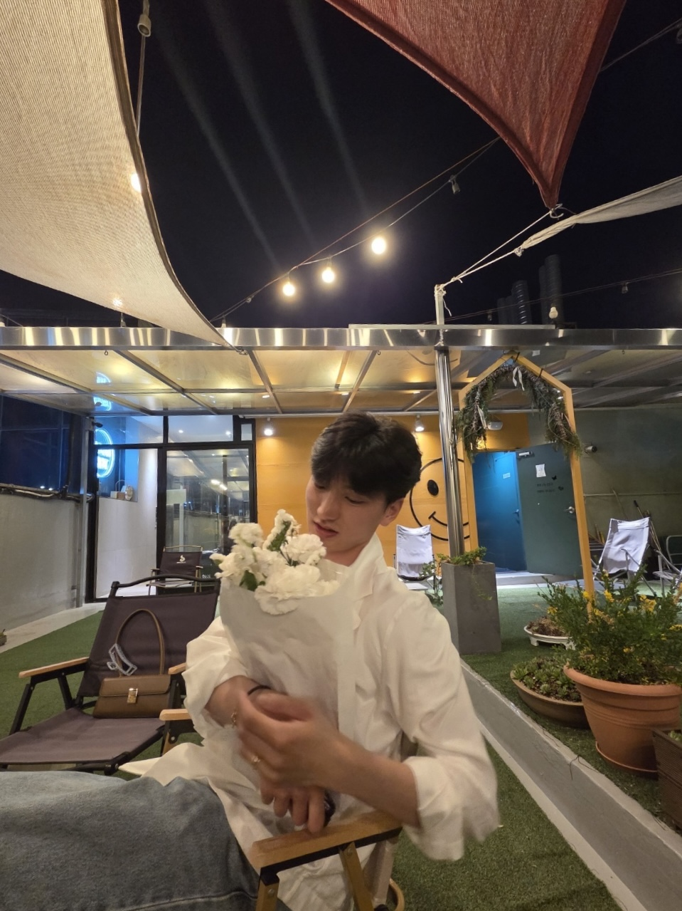
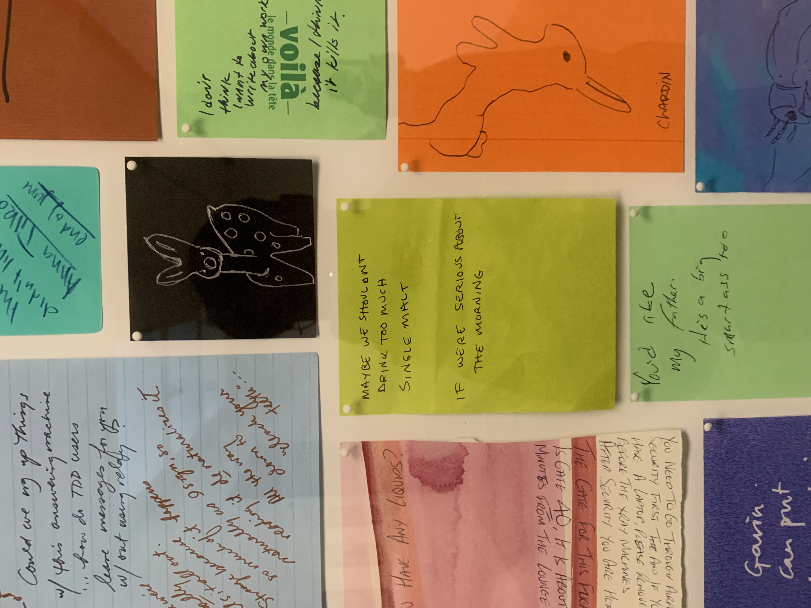
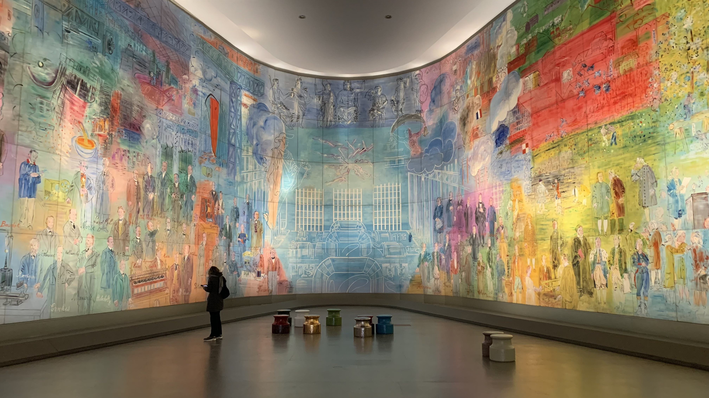
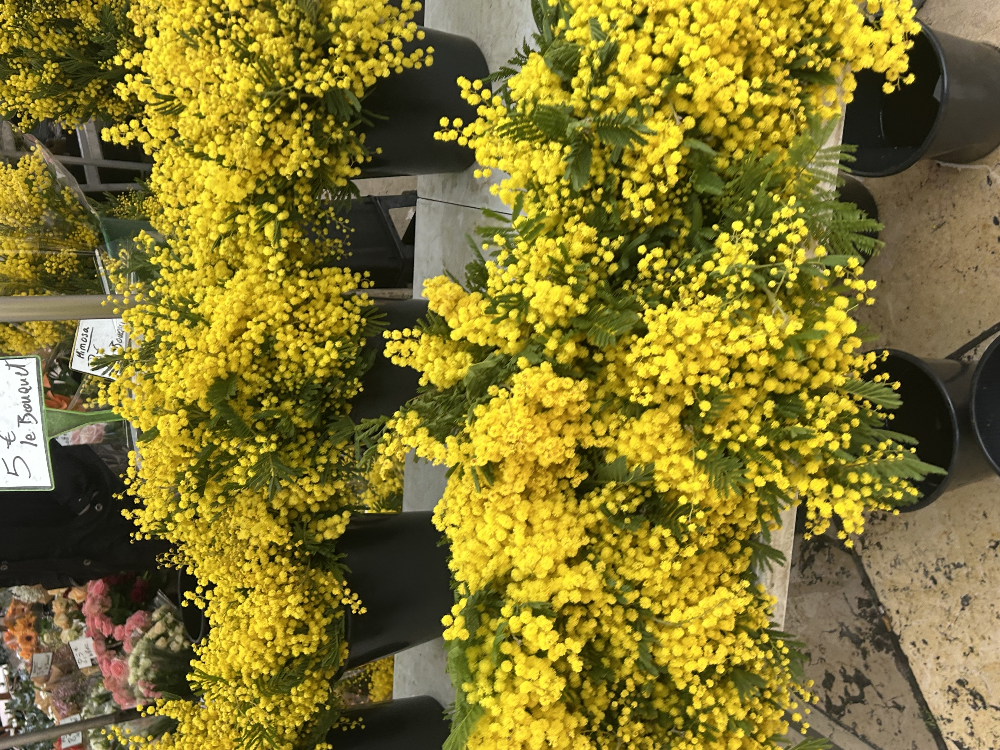
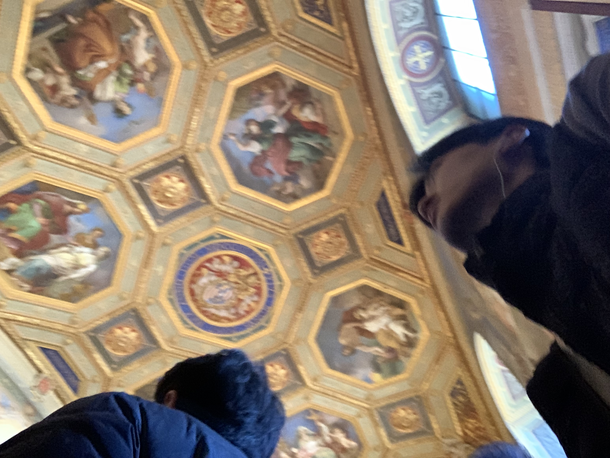
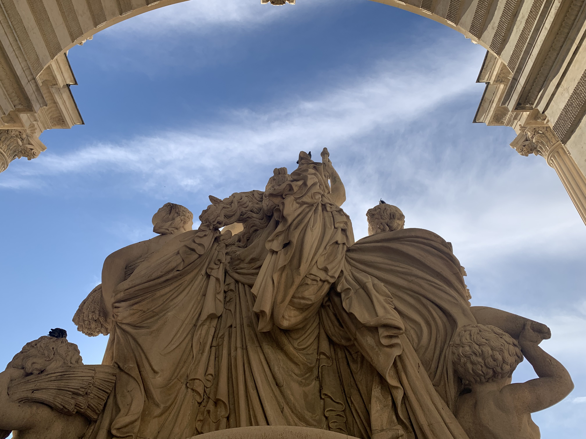
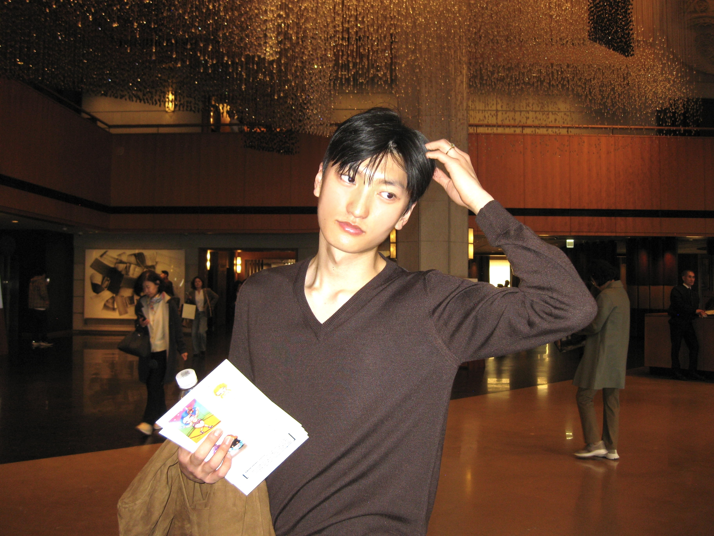
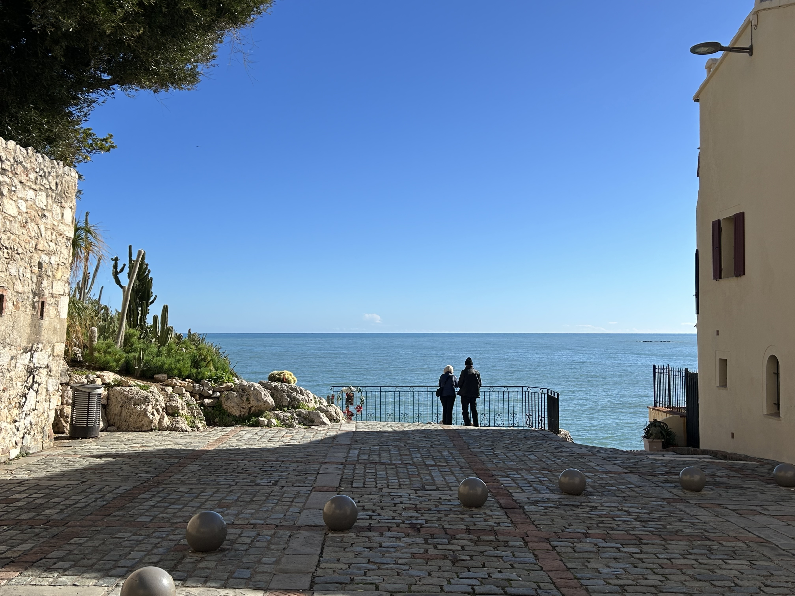
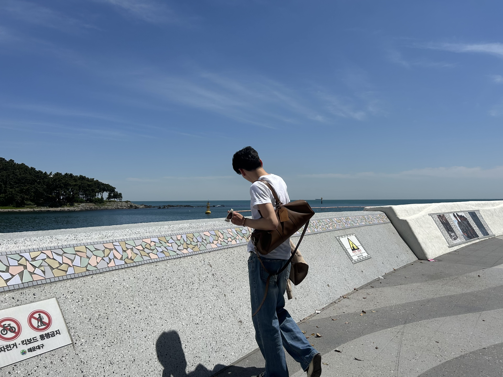

SeongTag KimSNU undergraduate / Business Administration / AI
Analytical range, cultural instinct.
I am SeongTag Kim, a 3rd-year undergraduate at Seoul National University double majoring in Business Administration and Artificial Intelligence. I care about finance, systems, art, travel, and the discipline of looking closely.
Current
Seoul National University
3rd-year undergraduate student.

Art notesFinance
CFA Level 3 Candidate
Passed Level 1 and Level 2.

Color fieldAbout
Business, AI, finance, and a point of view.
My academic path combines business fundamentals with technical depth in artificial intelligence. Outside the classroom, I write about art, visit museums, and travel with an eye for the details that shape how people understand places and ideas.

Education
Academic foundation
SNU
Seoul National University
3rd-year undergraduate student double majoring in Business Administration and Artificial Intelligence.

Visual studySASA
Sejong Academy of Science and Arts
Graduate of SASA, with a strong foundation in rigorous analytical and creative problem-solving.
Leadership & experience
Service, representation, and steady execution.
2024 - 2025
Mandatory Military Service
Completed mandatory military service, strengthening discipline, reliability, and team-oriented execution.
2023
SNU Student Ambassador
Served as an SNU Student Ambassador, representing the university and supporting visitors, prospective students, and campus programs.

Form and scale2022 - 2023
College of Business Administration Student Council
Active student council member for two years, contributing to student initiatives and college community operations.
Certification
CFA Level 3 Candidate
Successfully passed CFA Level 1 and Level 2; currently pursuing CFA Level 3.
Art & travel journal
A sharper life comes from looking longer.
I love delving into art and traveling around the world. My blog is where I write about exhibitions, museums, cities, and the small moments that reveal taste.
Visit blog


CV / Resume
Full profile and background
View or download my CV for more detail on education, leadership, service, and qualifications.
Contact
Open to thoughtful conversations.
Reach out for academic, professional, or art-related conversations.